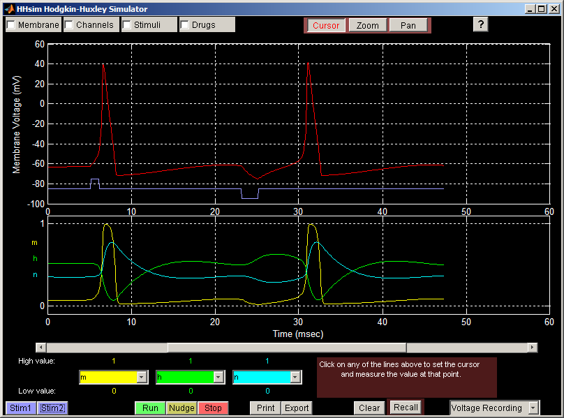
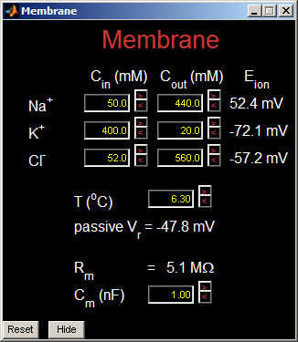
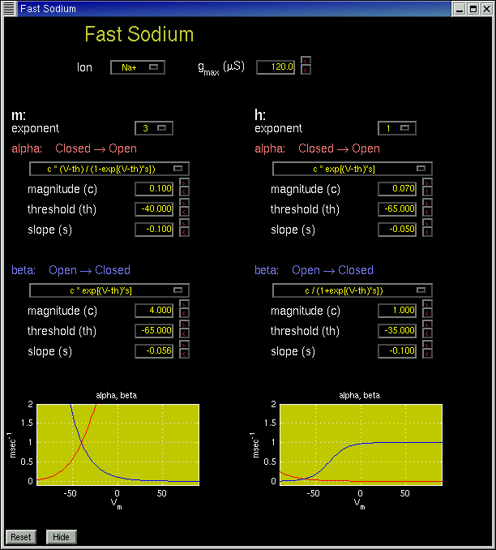
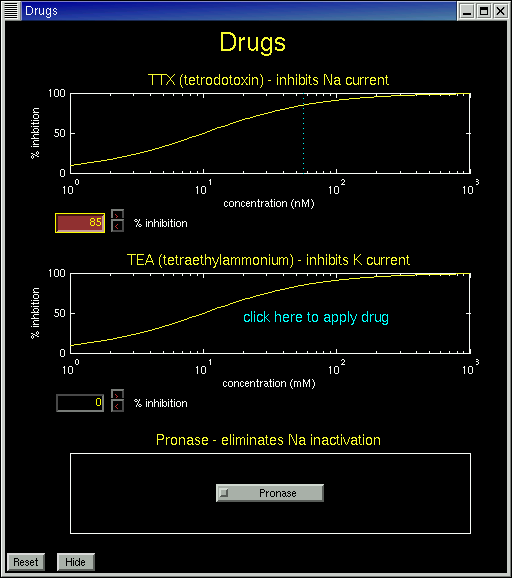
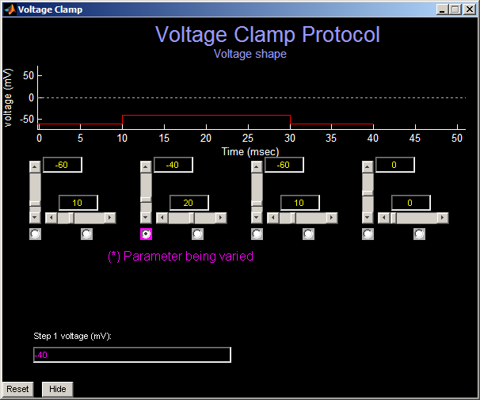

HHsim: Graphical Hodgkin-Huxley Simulator
David S. Touretzky
,
Mark V. Albert
, Nathaniel D. Daw, Alok Ladsariya and Mahtiyar Bonakdarpour
Screen Shots:





Back to main HHsim page
Dave Touretzky
Last modified: Wed Nov 5 00:22:56 EST 2003